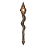

ปลาไหลลาวา · ร่างไฟฟ้า
มอนธาตุไฟ Lv 68–84
เจอที่
| แมพ | โซน | Lv | ภูมิภาค |
|---|---|---|---|
| ทะเลสาบลาวาเย็น | 68–84 | แดนใต้สีแดง |
ค่าสถานะตามเลเวล
| Lv | HP | ATK | DEF | MDEF | EXP | Job |
|---|---|---|---|---|---|---|
| 68 | 51,310 | 176–265 | 33 | 12 | 176 | 132 |
| 76 | 70,048 | 203–304 | 36 | 14 | 195 | 146 |
| 84 | 94,726 | 230–345 | 40 | 15 | 214 | 161 |
ตีด้วยธาตุไหนดี
แรงขึ้น: น้ำ ×1.5 พิษ ×1.25
เบาลง: ดิน ×0.5 ไฟ ×0.25
วัตถุดิบที่ดรอป
| ของ | โอกาส | |
|---|---|---|
| เกล็ดลาวาปลาไหล | 82% | 1 ชิ้น (15% ได้ 2) |
อุปกรณ์ที่ดรอป (1)
| ของ | โอกาส |
|---|---|
 หอกยาวปลาไหลลาวา | 0.24% |
สกิล
พ่น (Lv 25+) · พ่น (Lv 60+) · ปาตกใส่ (Lv 60+)